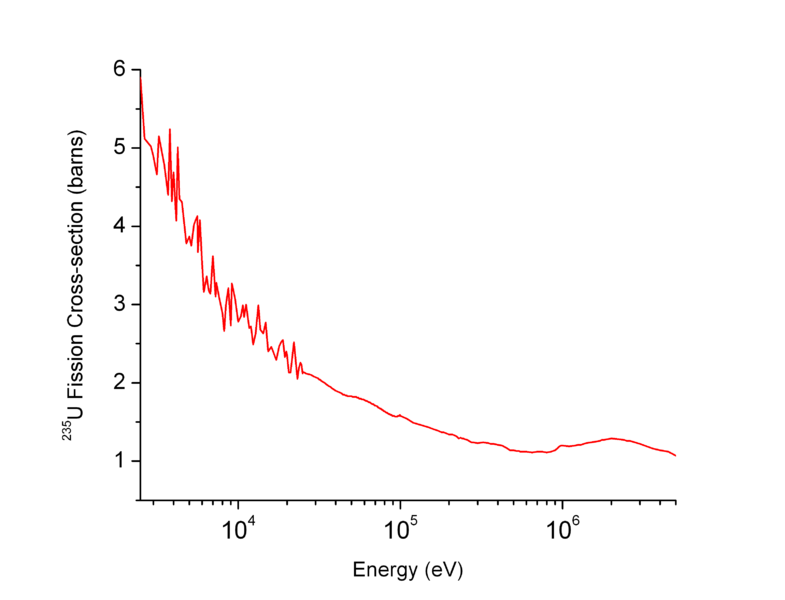

Power Plant Safety
What are Nuclear Power Plants?
Nuclear power plants harness the energy that is released when an atom splits through nuclear fission. Nuclear fission occurs when a neutron is absorbed into the nucleus of an atom, usually uranium-235, causing the atom to split into two smaller atoms while releasing three neutrons, several gamma rays, and a large amount of energy. This energy is used to heat up large volumes of water, which spin turbines that generate electricity. The three neurons that are released are able to continue on and cause more fission reactions. This creates a chain reaction which creates lots of energy very fast.
What are Control Rods?
Control rods are a safety feature in power plants that allows workers to slow down or stop the
reaction by absorbing the neutrons without continuing the chain reaction.
Materials that are not fissile are introduced into the reactor which absorb the neutrons.
Because they are not fissile, the collision with the neutron does not cause another fission
reaction, and those neutrons do not contribute to the chain reaction.
The materials that these rods are made out of are chosen based on their ability to absorb neutrons,
which is quantified using the neutron capture cross-section.
This is the cross area of an atom that can absorb neutrons. A common choice for control rods is
boron.
Boron has a large neutron capture cross section, but because of the way that it's elementary form
behaves, it is used in alloys, such as high boron steel.
There is one important trait of nuclear fission that allows control rods to be effective.
If neutrons could react with atoms adjacent to the atom that released them, then the control rods
would somehow have to be placed in between the individual atoms of fuel.
Luckily, this is not the case as neutrons cannot react as soon as they are released.
When Nuclear fission releases neutrons, they have a lot of energy, and are moving at very fast
speeds.
However the likelihood of a reaction occuring depends on the amount of energy the neutron has, the
less energy it has, the higher the chance that it will trigger a fission reaction.
This means that until the neutrons have expended some of their energy by travelling away from the
fuel rod that they came from, they will not react.
This makes them travel through the space inbetween the fuel rods and allows them to be intercepted
by a control rod.

How do Containment Systems Work?
Between the gamma radiation, radioactive fuel, and high pressure steam, nuclear reactors have a lot
of dangers that they need to protect against. The ideology for protecting against exposure or leaks
is ‘Defence in Depth’, containing the nuclear reaction with four different systems.
The first is the ceramic fuel pellets. Instead of using elemental uranium in the reactor, uranium
dioxide is used, as its physical properties are favourable. Not only is its melting point much
higher (2865°C vs 1132°C), because its already an oxide, it can’t burn. This drastically reduces
complications. To create these pellets, uranium trioxide is reacted with hydrogen to form uranium
oxide. The uranium oxide is then pressed into pellets, and sintered to form a ceramic.
The second system is the fuel rods themselves. The fuel pellets are stacked and then sealed in
tubes, along with coolant. These tubes are made of zirconium alloys, which are very corrosion
resistant and have a low neutron capture area. The corrosion resistance prevents the fuel from
leaking, while the low neutron capture area stops the neutrons interacting with something that’s not
designed to control or limit the reaction.

The final containment system is the containment building. When people think of a nuclear power
plant, they imagine a large hyperbolic structure. This structure does not contain the reactor, but
rather, is just a water cooling tower. The reactor is actually contained within a cylindrical
building, built to contain high pressure steam, or radioactive gas in the case of an emergency.
Although some are made with lead, the most common designs use concrete reinforced with steel. This
is because the containment building doesn’t need lead to block radiation, but rather high strength
steel to contain steam pressure.
How does Water Cooling Work?
| Topic | FAQ | Information | Source |
|---|---|---|---|
| Control Rods | Control rods | Neutrons don't react with adjacent atoms as they need to expend energy and slow down to react. | Stack Exchange |